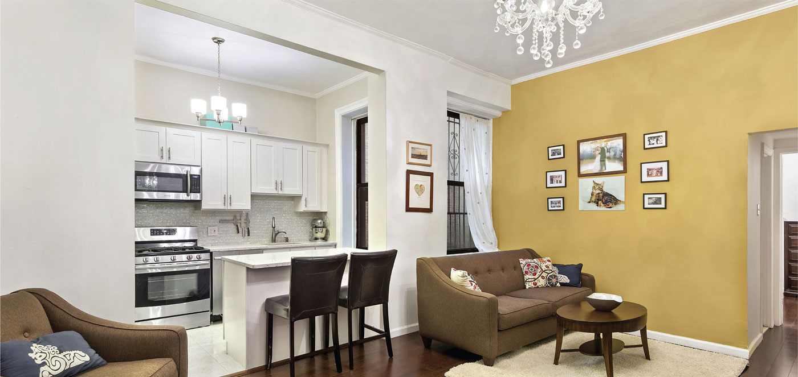
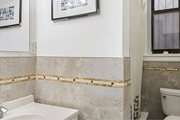
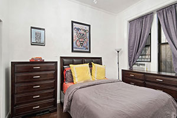

|  | ||
|
 |  |
61 Eastern Parkway 1G$500,000 • 1 BED • COOP • 1 BATH • $1,051 MAINTENANCE |
|
Jennifer Lee, MBA
VP OF SALES
M: 510-543-7709
O: (866) 432-5956
E: Jennifer@triplemint.com
Allie Deitch
LICENESED REAL ESTATE SALES PERSON
M: 516-236-2140
O: (866) 432-5956
E: allie@triplemint.com
|
Location and Beauty! Move right in to this triple mint true 1 Bedroom steps away from the Brooklyn Botanic Garden, Brooklyn Museum and Prospect Park. And all for under $500,000! No detail was spared in the renovation of this pristine unit with brand new matching Samsung stainless steel appliances, granite countertops in the kitchen, new tiled bathroom. The unit is set towards the back of the building so the unit is pin drop quiet. Eastern Parkway is a full service coop in the heart of Prospect Heights, minutes from the 2,3 express trains and across the street from the beautiful Brooklyn Botanic Gardens and Brooklyn Museum. A quick 5 minute walk will bring you to Grand Army Plaza, home to a weekly farmer’s market and food truck expo, and Prospect Park. The building offers full time doorman, live-in super, bike storage and laundry in basement. Please contact me for a private showing. First open house March 6th. This will not last! |